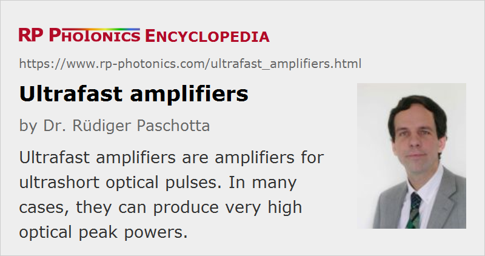

Ultrafast Amplifiers
Definition: amplifiers for ultrashort (femtosecond or picosecond) optical pulses
Alternative terms: ultrashort pulse amplifiers, femtosecond or picosecond amplifiers
More specific terms: regenerative amplifiers, multipass amplifiers, optical parametric amplifiers, optical parametric chirped-pulse amplifiers, chirped-pulse amplifiers
German: Ultrakurzpulsverstärker
Categories: optical amplifiers, light pulses
How to cite the article; suggest additional literature
Author: Dr. Rüdiger Paschotta
Ultrafast amplifiers are optical amplifiers which are applied to ultrashort pulses. Some of these devices are used for amplifying high repetition rate pulse trains, leading to a high average power whereas the pulse energy remains moderate. In other cases, a much higher gain is applied to pulses at lower repetition rates, leading to high pulse energies and correspondingly huge peak powers. Enormously high optical intensities, sometimes above 1016 W/cm2, are achieved by focusing such intense pulses tightly on some target.
The following kind of pulse generation devices may be involved:
- The seed laser may be an internal or external mode-locked laser, or in some cases a gain-switched laser diode.
- Particularly for pre-amplification with high gain, but moderate power levels, one may either use a fiber amplifier or a bulk regenerative amplifier.
- Further boosting of the output energy and peak power is possible with a single-pass or multipass amplifier.
- There are also optical parametric amplifiers, which can produce very high gain and substantial output energies, but require energetic pump pulses rather than a continuous or quasi-continuous pump source.
Some examples for typical pulse energies and peak powers:
- A mode-locked laser may generate 100-fs pulses with a repetition rate of 100 MHz and an average power of 0.1 W. The pulse energy is then only 0.1 W / 100 MHz = 1 nJ; nevertheless, due to the short pulse duration the peak power is nearly 10 kW (somewhat depending on the pulse shape).
- A high-power amplifier, applied to the full pulse repetition rate, may raise the average power by 20 dB to 10 W, thus increasing the pulse energy to 100 nJ and the peak power to the order of 1 MW. Further substantial increases of peak power are difficult, because the average power would become very high.
- A pulse picker before the amplifier may be used to reduce the pulse repetition rate to 1 kHz. If the high-power amplifier can still raise the average power to 10 W, the pulse energy is now 10 mJ, and the peak power nearly 100 GW. The required amplifier gain is now as high as 70 dB.
- Systems with pulse pickers may even be operated with much lower pulse repetition rates, e.g. of 10 Hz. One may then reach even higher pulse energies and peak powers while keeping the average power level quite moderate. However, one then needs a huge amount of amplifier gain.
Special Requirements for Ultrafast Amplifiers
Beyond the general technical issues of optical amplifiers, ultrafast devices meet a number of additional challenges:
- Particularly for high-energy systems, the amplifier gain must be huge. As shown in the examples discussed above, a gain of many tens of decibels is often needed. As single-pass amplifiers are limited in terms of gain, multipass arrangements are frequently used. Very high gain is possible with regenerative amplifiers. Also, it is common to use multiple amplifier stages (→ amplifier chains). For example, one may use a regenerative amplifier plus one or two multipass amplifiers. The last stages are optimized for high pulse energies and efficient energy extraction.
- A high gain also implies a high sensitivity against any back-reflected light (except for regenerative and parametric amplifiers). Therefore, one often requires Faraday isolators between the amplifier stages. In addition, it is often necessary to carefully avoid extensive optical feedback from the application into an amplifier device, because the use of a Faraday isolator after the last amplifier stage may not be feasible.
- The high gain also implies a strong tendency for amplified spontaneous emission (ASE). To some extent, ASE in laser amplifiers can be suppressed with optical switches such as acousto-optic modulators between the amplifier stages. These switches are opened only for short time intervals around the peaks of the amplified pulses. However, these time intervals are usually still long compared with the pulse duration, so that it is not possible to suppress some ASE background around the pulses. Optical parametric amplifiers are better in this respect, as they provide gain only during the passage of the pump pulse. Also, there is no amplification for light propagating in the backward direction.
- Ultrashort pulses have some significant optical bandwidth, which can be reduced by the effect of gain narrowing in an amplifier, so that the amplified pulses become longer. For pulse durations below a few tens of femtoseconds, ultrabroadband amplifiers are required. Note that gain narrowing is particularly important in high-gain systems.
- Particularly for systems with high pulse energies, various optical nonlinearities can distort the temporal and spectral pulse shape, or may even lead to laser-induced damage of the amplifier via self-focusing. An effective technique for mitigating such effects is chirped-pulse amplification (CPA), where the pulses are first dispersively stretched to e.g. 1 ns duration, then amplified, and finally dispersively recompressed. A novel and not yet common alternative is divided-pulse amplification. Another important measure is to increase the mode areas in the amplifiers so as to reduce the optical intensities.
- For a single-pass amplifier, efficient energy extraction is possible only if the pulse duration is long enough to reach a pulse fluence of the order of the saturation fluence without causing strong nonlinear effects.
Ultrafast laser amplifiers are usually continuously pumped, except for very low pulse repetition rates below the inverse upper-state lifetime. In any case, the required pump power is far lower than the output peak power. This is essentially because one can exploit the energy storage in the laser gain medium.
For optical parametric amplifiers, not offering energy storage, the pump pulse duration is often similar to the duration of the amplified pulses. In some cases, however, the pump pulses can be significantly longer, because one can exploit the group velocity mismatch in the nonlinear crystal.
Examples of Possible Performance Figures
The requirements on ultrafast amplifiers in terms of pulse energy, pulse duration, repetition rate, mean wavelength, etc., are very diverse. Correspondingly, very different types of devices are used. The following list gives some typical examples of the performance reached by different types of systems:
- An ytterbium-doped fiber amplifier may amplify a 100-MHz train of 10-ps pulses to an average power of 10 W. (A system with such output performance is sometimes called an ultrafast fiber laser, although it is actually a master oscillator power amplifier device.) The peak power of roughly 10 kW can be relatively easily handled with a large mode area amplifier fiber. For femtosecond pulses, however, such a system would exhibit severe nonlinear effects. Starting with femtosecond pulses and applying chirped-pulse amplification, several microjoules can easily be reached, or in extreme cases > 1 mJ. An alternative is the amplification of parabolic pulses in a fiber with normal dispersion, and subsequent dispersive compression.
- A multipass bulk amplifier, based e.g. on Ti:sapphire and realized with a large mode area, may provide an output energy of the order of 1 J at a low repetition rate of e.g. 10 Hz. Strong pulse stretching to a duration of e.g. a few nanoseconds is necessary in order to limit nonlinear effects. After compression to e.g. 20 fs, the peak power is tens of terawatts (TW); the most advanced large systems already reach peak powers above 1 PW, i.e. in the petawatt domain. Smaller systems generate e.g. 1-mJ pulses at 10 kHz. The gain of a multipass amplifier is usually of the order of 10 dB.
- A much higher gain of several tens of decibels is possible with a regenerative amplifier. Made with Ti:sapphire, e.g., such a device may amplify 1-nJ pulses to 1 mJ. Again, chirped-pulse amplification has to be applied in order to limit nonlinear effects.
- Using a regenerative amplifier based on an Yb-doped thin-disk laser head, pulses with durations somewhat below 1 ps can be amplified to hundreds of microjoules without applying CPA.
- An optical parametric amplifier, pumped with nanosecond pulses from a Q-switched laser, can amplify stretched pulses to energies of several millijoules. A high gain of tens of decibels can be achieved in a single pass. For special phase-matching configurations, the gain bandwidth can be very large, so that very short pulse durations are possible after dispersive compression.
The performance figures of commercial ultrafast amplifier systems often greatly lag behind the best performance values achieved in scientific experiments. In many cases, a main reason is that experimental systems rely on techniques or components which cannot be used in commercial devices due to a lack of stability and robustness. For example, complex fiber-based systems have been demonstrated which contain multiple transitions between fibers and free-space optics. All-fiber amplifier systems can be made, but these do not reach the performance levels of systems containing bulk-optical elements. In other cases, optical components are operated close to their damage threshold; for commercial devices, a larger safety margin is required. Another problem can be the use of very special parts, which are difficult to procure.
Applications
Ultrafast amplifiers find diverse applications:
- Many devices are used in fundamental research. They can provide intense pulses for highly nonlinear processes such as high harmonic generation, or for the acceleration of particles to high energies.
- Large ultrafast amplifiers are under consideration for the use in laser-induced nuclear fusion (inertial confinement fusion, fast ignition).
- Millijoule pulse energies in picosecond or femtosecond pulses are interesting for micromachining. Short pulse durations make it possible to achieve very precise cutting of thin metal sheets, for example.
Industrial applications are often made difficult by the complexity and cost of ultrafast amplifier systems, sometimes also by a lack of robustness. Further technological progress may improve the situation.
Suppliers
The RP Photonics Buyer's Guide contains 27 suppliers for ultrafast amplifiers. Among them:
Questions and Comments from Users
Here you can submit questions and comments. As far as they get accepted by the author, they will appear above this paragraph together with the author’s answer. The author will decide on acceptance based on certain criteria. Essentially, the issue must be of sufficiently broad interest.
Please do not enter personal data here; we would otherwise delete it soon. (See also our privacy declaration.) If you wish to receive personal feedback or consultancy from the author, please contact him e.g. via e-mail.
By submitting the information, you give your consent to the potential publication of your inputs on our website according to our rules. (If you later retract your consent, we will delete those inputs.) As your inputs are first reviewed by the author, they may be published with some delay.
Bibliography
| [1] | M. D. Perry et al., “Petawatt laser pulses”, Opt. Lett. 24 (3), 160 (1999), doi:10.1364/OL.24.000160 |
| [2] | J. Limpert et al., “High-power ultrafast fiber laser systems”, J. Sel. Top. Quantum Electron. 12 (2), 233 (2006), doi:10.1109/JSTQE.2006.872729 |
| [3] | P. Russbueldt et al., “Scalable 30??fs laser source with 530 W average power”, Opt. Lett. 44 (21), 5222 (2019), doi:10.1364/OL.44.005222 |
| [4] | F. Salin, “Ultrafast solid-state amplifiers”, in Ultrafast Lasers: Technology and Applications (eds. M. Fermann, A. Galvanauskas, G. Sucha), Marcel Dekker, New York (2002), Chapter 2, p. 61–88 |
| [5] | A. Galvanauskas, “Ultrashort-pulse fiber amplifiers”, in Ultrafast Lasers: Technology and Applications (eds. M. Fermann, A. Galvanauskas, G. Sucha), Marcel Dekker, New York (2002), Chapter 4, p. 155–218 |
| [6] | G. Cerulla and C. Manzoni, “Solid-state ultrafast optical parametric amplifiers”, in Solid-State Lasers and Applications (ed. A. Sennaroglu), CRC Press, Boca Raton (2007), Chapter 11, pp. 437–472 |
| [7] | R. Paschotta, tutorial on "Fiber Amplifiers", part 8 on ultrafast amplifiers |
| [8] | R. Paschotta, tutorial on "Modeling of Fiber Amplifiers and Lasers" |
See also: optical amplifiers, multipass amplifiers, regenerative amplifiers, chirped-pulse amplification, divided-pulse amplification, ultrafast lasers, The Photonics Spotlight 2008-06-20
and other articles in the categories optical amplifiers, light pulses
|  |
If you like this page, please share the link with your friends and colleagues, e.g. via social media:
These sharing buttons are implemented in a privacy-friendly way!